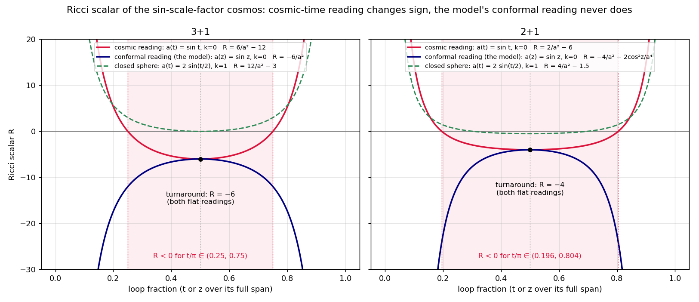

The Ricci scalar of the sin-scale-factor cosmos: Chris's R = 6/a² − 12 is right — for a cosmic-time clock the model doesn't use
- Both of Chris's formulas verify under the reading that t is COSMIC (proper) time: for (d+1)-dimensional flat FRW, R = 2d ä/a + d(d−1)(ḱ/a)², and a(t) = sin t gives R = d(d−1)/a² − d(d+1): 6/a²−12 in 3+1 (sign change at exactly t/π = 1/4, 3/4) and 2/a²−6 in 2+1 (a wider window, t/π = 0.196 to 0.804). The k=1 comparison a(t) = 2 sin(t/2) gives 12/a²−3 in 3+1, non-negative with a zero only at turnaround. (One aside: that sphere is a kinematically imposed profile, not the matter-dominated closed FRW — the dust cycloid has R = 6/a³.)
- But the model's clock is conformal, and then R never
changes sign. The ground-truth definition
(
PHYSICS_FINDINGS.md) is z ∈ (0, π) CONFORMAL time with a(z) = sin z — that is the chart where the |a·b| = 1 budget means unit light speed and the causal cones are 45°. Under that reading R = −6/a² in 3+1 (in 2+1: −4/a² − 2cos²z/a⁴): negative for the entire history, −2d at the turnaround, −∞ at the Bang and Crunch. - The two readings are different spacetimes, not different coordinates on one. The cosmic-time sin universe has infinite conformal time (η = ln tan(t/2) spans ±∞), so it cannot carry the closed z ∈ (0, π) worldline loop at all; conversely the model's conformal sin universe has total proper duration 2, with proper-time scale factor a(t) = √(t(2−t)) — a semicircle, not a sine.
- What survives either convention — the robust core of Chris's observation: at a turnaround H = 0, so a FLAT universe that turns around has R = 2d ä/a < 0 there regardless of parametrization (both flat readings meet at exactly R = −2d), while the closed 3-sphere stays ≥ 0 through its cycle. Via the trace R = 8πG(ρ−3p), negative R at the top demands a fluid stiffer than radiation (w > 1/3) near turnaround — and the measured w(z) is DUST-like there (w = d/(6T)). This is the same tension already recorded as the flat-Friedmann turnaround caveat in the two-fluid notes (ρ → 0 at the top forces either restored k > 0 curvature or reading flatness as an approximation away from the turnaround), now seen from the curvature side.

Takeaway: “R runs negative from π/4 to 3π/4” is a true statement about a cosmic-time sin universe that cannot host the model's conformal loop; in the model's own convention the scalar curvature is negative from Bang to Crunch with no sign change. The convention-free statement worth keeping is flat + turnaround ⇒ R < 0 at the top, which is the known pressure-at-turnaround tension in curvature language.